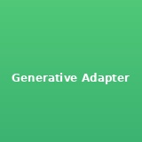
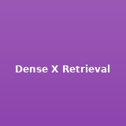
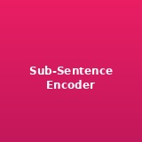

|
Tong Chen I am a Ph.D. student in Computer Science at the University of Washington advised by Luke Zettlemoyer and Hannaneh Hajishirzi. My research focuses on Natural Language Processing and Machine Learning, specifically how language models can effectively integrate and utilize knowledge. |

|
📜 Selected PublicationsPlease see my Google Scholar for the full list. (*: equal contribution) |
|
|
ParaPO: Aligning Language Models to Reduce Verbatim Reproduction of Pre-training Data
Tong Chen, Faeze Brahman, Jiacheng Liu, Niloofar Mireshghallah, Weijia Shi, Pang Wei Koh, Luke Zettlemoyer, Hannaneh Hajishirzi COLM, 2025 arXiv A novel approach to reduce verbatim reproduction of pre-training data in language models through alignment techniques. |
|
 |
Generative Adapter: Contextualizing Language Models in Parameters with A Single Forward Pass
Tong Chen, Hao Fang, Patrick Xia, Xiaodong Liu, Benjamin Van Durme, Luke Zettlemoyer, Jianfeng Gao, Hao Cheng ICLR, 2025 (Contributed Talk at NeurIPS 2024 Workshop on Adaptive Foundation Models) OpenReview An efficient method to contextualize language models through parameter adaptation with minimal computational overhead. |
|
|
CopyBench: Measuring Literal and Non-literal Reproduction of Copyright-protected Text in Language Model Generation
Tong Chen, Akari Asai*, Niloofar Mireshghallah*, Sewon Min, James Grimmelmann, Yejin Choi, Hannaneh Hajishirzi, Luke Zettlemoyer, Pang Wei Koh EMNLP, 2024 (Contributed Talk at NeurIPS 2024 Workshop on Regulatable ML) ACL Anthology A comprehensive benchmark for evaluating copyright compliance in language model generation, distinguishing between literal and non-literal reproduction. |
|
 |
Dense X Retrieval: What Retrieval Granularity Should We Use?
Tong Chen, Hongwei Wang, Sihao Chen, Wenhao Yu, Kaixin Ma, Xinran Zhao, Hongming Zhang, Dong Yu EMNLP, 2024 (Officially integrated into LangChain and LlamaIndex) ACL Anthology Investigation of optimal retrieval granularity for dense retrieval systems, with practical integration into popular frameworks. |
|
|
MixGR: Enhancing Retriever Generalization for Scientific Domain through Complementary Granularity
Fengyu Cai, Xinran Zhao, Tong Chen, Sihao Chen, Hongming Zhang, Iryna Gurevych, Heinz Koeppl EMNLP, 2024 arXiv A method to improve retrieval generalization in scientific domains through complementary granularity approaches. |
|
|
Beyond Relevance: Evaluate and Improve Retrievers on Perspective Awareness
Xinran Zhao, Tong Chen, Sihao Chen, Hongming Zhang, Tongshuang Wu COLM, 2024 arXiv Evaluation framework and improvements for retrieval systems focusing on perspective awareness beyond traditional relevance metrics. |
|
 |
Sub-Sentence Encoder: Contrastive Learning of Propositional Semantic Representations
Sihao Chen, Hongming Zhang, Tong Chen, Ben Zhou, Wenhao Yu, Dian Yu, Baolin Peng, Hongwei Wang, Dan Roth, Dong Yu NAACL, 2024 arXiv Novel approach for learning propositional semantic representations through contrastive learning at the sub-sentence level. |
|
|
Poisoning Medical Knowledge Using Large Language Models
Junwei Yang, Hanwen Xu, Srbuhi Mirzoyan, Tong Chen, Zixuan Liu, Zequn Liu, Wei Ju, Luchen Liu, Zhiping Xiao, Ming Zhang, Sheng Wang Nature Machine Intelligence, 2024, volume 6, pages 1156–1168 BioRxiv Investigation of potential risks in medical knowledge systems when using large language models, highlighting security concerns. |
|
|
MetaCURE: Meta Reinforcement Learning with Empowerment-Driven Exploration
Jin Zhang*, Jianhao Wang*, Hao Hu, Tong Chen, Yingfeng Chen, Changjie Fan, Chongjie Zhang ICML, 2021 Proceedings Meta reinforcement learning approach using empowerment-driven exploration for improved learning efficiency. |
|
|
Auxiliary Training: Towards Accurate and Robust Models
Linfeng Zhang, Muzhou Yu, Tong Chen, Zuoqiang Shi, Chenglong Bao, Kaisheng Ma CVPR, 2020 Open Access Auxiliary training methodology for improving model accuracy and robustness in computer vision tasks. |
🧑🏫 Teaching & Service
Teaching Assistant:
Departmental Service:
Paper Reviewer: |
🔬 Research Experience
University of Washington, 09/2022–Present
Microsoft Research, 06/2024–08/2024
Tencent AI Lab, 06/2023–09/2023
Microsoft Research Asia, 03/2021–09/2021
Tsinghua University, 09/2018–06/2022 |